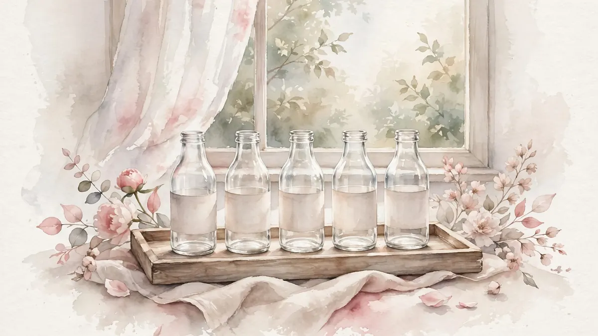

トップ ＞ インナーケア・サプリ ＞ ドリンクタイプのサプリの表示の見方
ドリンクタイプのサプリの表示の見方

瓶や紙パックに入ったドリンクタイプのサプリメントは、1本で1回分が完結する手軽さが特徴です。粒タイプとは表示の読みどころが少し違います。特に「単位」と「開封後の扱い」は、買う前に確認しておきたいポイントです。この記事では、ドリンクタイプの表示の見方を整理します。
まず単位：「1本あたり」か「100mLあたり」か
栄養成分表示を見るとき、最初に確認したいのが単位です。ドリンクタイプでは「1本（○○mL）あたり」と書かれているものと、「100mLあたり」で書かれているものがあります。エネルギーや糖質などの数字は、単位が違えば見え方が大きく変わります。2つの商品を比べるときは、単位をそろえてから数字を見るのが基本です。
成分の含有量についても同じです。「1本あたり◯mg」と明示されているかどうかで、自分の想定との比べやすさが変わります。単位の前提が表示のどこに書かれているかを含めて読むのが、ドリンクタイプの表示の第一歩です。
案内文に「飲み方」と「開封後」が書かれている
ドリンクタイプのパッケージやラベルには、「よく振ってからお飲みください」「開封後はすぐにお飲みください」「開封後は冷蔵庫で保管し、お早めに」といった案内文がよく見られます。沈殿が見られる場合に、その旨が表示に添えられていることもあります。見た目が気になったときは、まずこの案内文を確認してください。
粒タイプと大きく違うのは、開封後の持ちが短い前提で表示が作られていることです。飲みかけを長く置く使い方は、表示の想定から外れます。1本飲み切りのサイズが多いのも、そのためです。
目安量と置き場所を決める
目安量は「1日1本を目安に」のように書かれていることが多く、箱買いの場合は「何日分なのか」を本数で数えられます。冷蔵庫で保管するタイプは、家族の飲み物と見分けがつくよう、置く場所を決めて目印を付けておくと取り違えを防げます。
持ち運ぶ場合は、未開封でも保管条件の表示を確認してください。車の中など温度の上がる場所に長く置く使い方は、表示の想定から外れます。粒タイプと同じく、表示の保管条件がその商品の前提です。ドリンクタイプは「単位・案内文・目安量」の3点を押さえれば、表示の読み方はぐっと安定します。
箱買いのときは、本数と期限で数える
ドリンクタイプを箱で買う場合は、本数がそのまま日数の目安になります。10本入りで1日1本なら10日分、30本入りなら約1か月分です。買い置きをするときは、この日数と賞味期限を並べて、飲み切る予定が期限より十分手前にあるかを確認してください。
冷蔵庫で保管するタイプは、箱の置き場所も確保が要ります。家族の飲み物と場所を取り合う場合は、置く段を決めておくと取り違えも防げます。空いた容器の処分は、お住まいの自治体の分別ルールに従ってください。ドリンクタイプは、数える単位が「本」である分、在庫の見通しが立てやすい形でもあります。
まとめ買いの割安さも、1本あたりの金額に直してから判断します。箱の価格を本数で割れば、1日分の金額が出てきます。通常の単品価格と比べるときも、この物差しでそろえるのが基本です。
持ち歩く場面では、未開封でも温度の上がる場所を避けることが、表示の保管条件に沿う使い方です。保冷バッグを使うかどうかは、時間の長さと表示の条件で判断してください。
賞味期限の確認は、箱買いでは特に大切です。箱の側面や瓶のラベルにある期限は、買い置きの本数と並べて確認してください。期限の早い箱から開ける並べ方を棚で決めておくと、飲み切りの計画が崩れにくくなります。
飲むタイミングは、目安量の案内に沿って食事の流れに置くのが基本です。冷蔵庫から出してすぐ飲める形は、置く場所さえ決まれば習慣化しやすいタイプでもあります。
セラフィナ「ドリンクは単位が大事。1本あたりか100mLあたりか、そこから読もう」